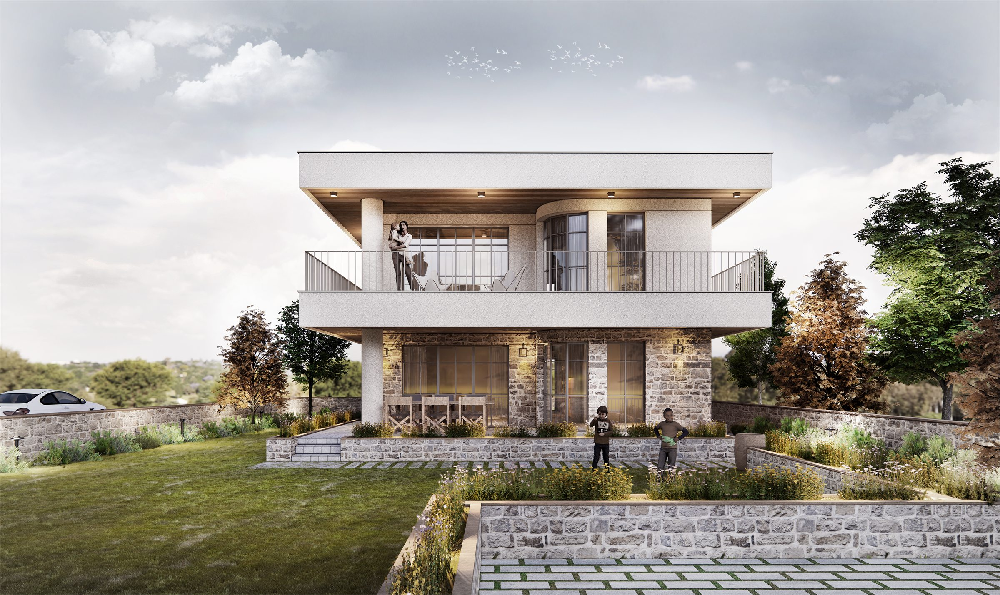
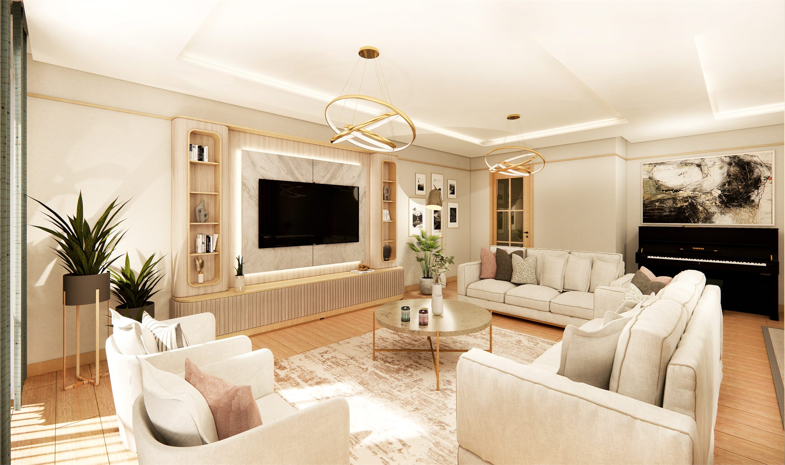
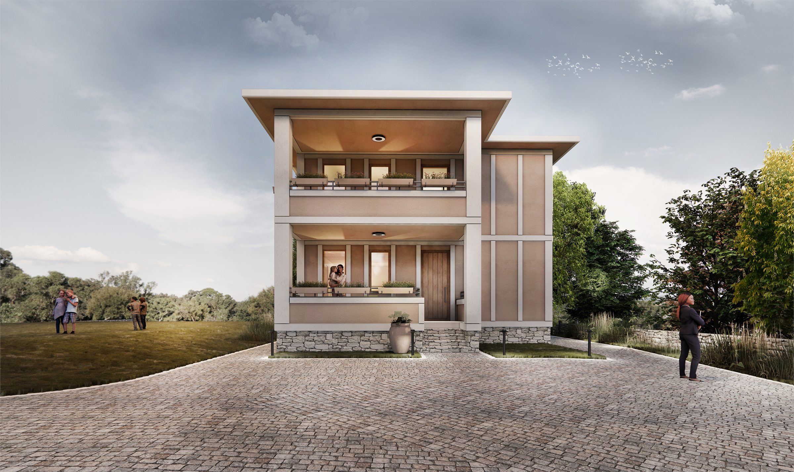
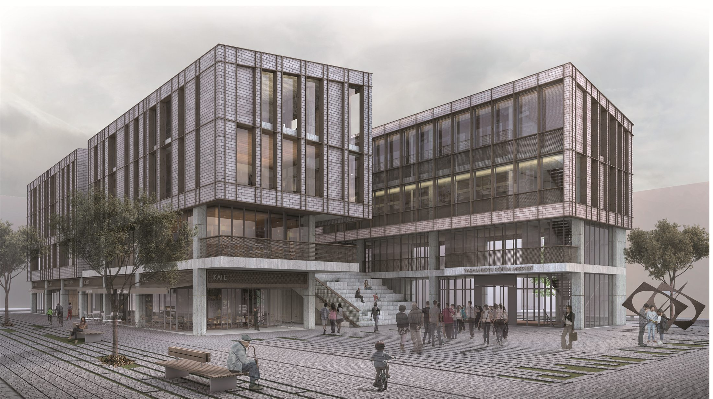
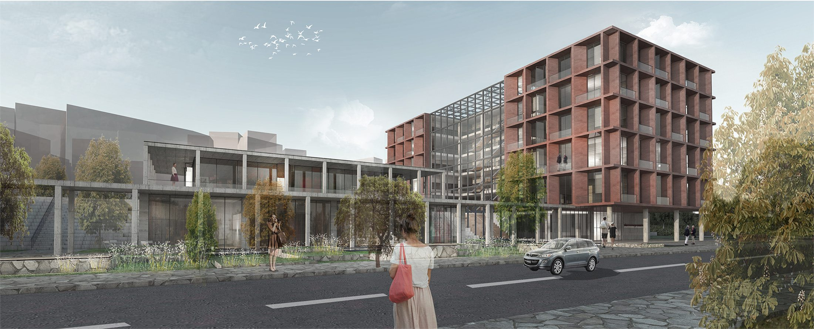

Projeler
Stüdyo
İletişim
TR
/
EN
01
Projeler
02
Stüdyo
03
İletişim
Instagram
@demiroz_koc_architects
TR
/
EN
Projeler
Tümü
Konut
Ofis
Çok İşlevli
Kentsel
01
Zabjelo Kültür ve Toplum Merkezi
Çok İşlevli
2026

02
Yeşilbayır Evi
Konut
2026

03
Akas Çamlıca İç Mekân Tasarımları
Konut
2023

04
Ordu'da Müstakil Konut
Konut
2021

05
Merzifon İş ve Yaşam Merkezi
Ofis
2017

06
Tekirdağ Süleymanpaşa Belediye Hizmet Binası
Kentsel
2017
Bu kategoride henüz proje yok.